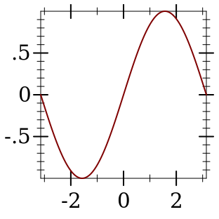
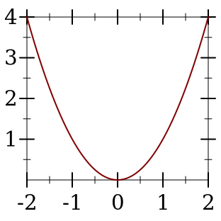
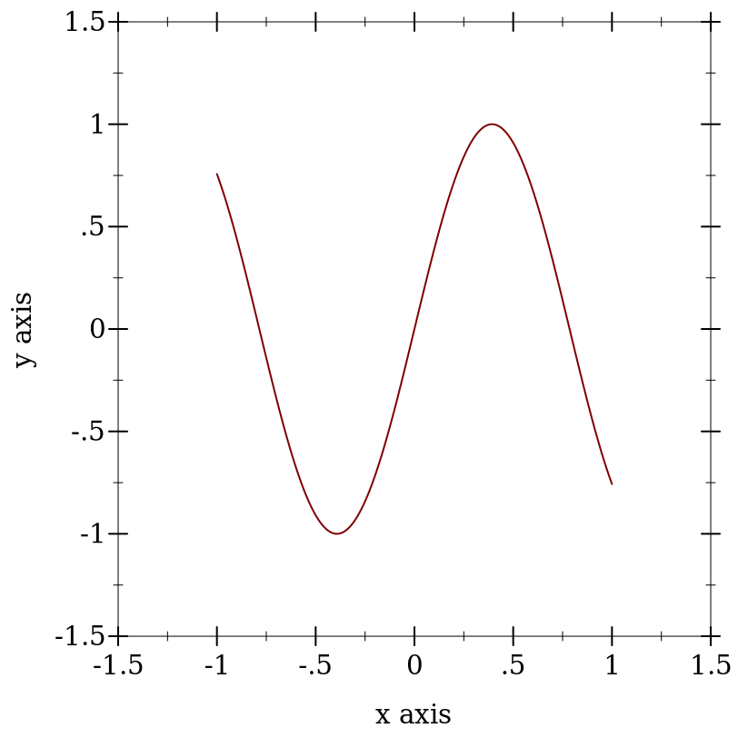

2 二维和三维绘图程序
plot/no-gui 输出的绘图程序产生 bitmap% 和 pict 实例,并写入文件。 它们不需要 racket/gui, 所以它们可以在无头环境下工作;例如,在 Linux 终端上不设置 DISPLAY 。
plot 模块重新输出所有由 plot/no-gui 输出的东西, 以及 plot, plot3d 和其他创建交互式绘图和绘图框架的程序。 交互式绘图程序总是可以被导入,但如果没有工作的显示器或 racket/gui 不存在,则调用时会失败。
每个 3D 绘图程序的行为与相应的 2D 程序相同, 但需要额外的关键字参数 #:z-min, #:z-max, #:angle, #:altitude 和 #:z-label 。
2.1 GUI 绘图程序
| (require plot) | package: plot-gui-lib |
procedure
(plot renderer-tree [ #:x-min x-min #:x-max x-max #:y-min y-min #:y-max y-max #:width width #:height height #:title title #:x-label x-label #:y-label y-label #:aspect-ratio aspect-ratio #:legend-anchor legend-anchor #:out-file out-file #:out-kind out-kind]) → (or/c (and/c (is-a?/c snip%) (is-a?/c plot-metrics<%>)) void?) renderer-tree : (treeof (or/c renderer2d? nonrenderer?)) x-min : (or/c rational? #f) = #f x-max : (or/c rational? #f) = #f y-min : (or/c rational? #f) = #f y-max : (or/c rational? #f) = #f width : exact-positive-integer? = (plot-width) height : exact-positive-integer? = (plot-height) title : (or/c string? pict? #f) = (plot-title) x-label : (or/c string? pict? #f) = (plot-x-label) y-label : (or/c string? pict? #f) = (plot-y-label)
aspect-ratio : (or/c (and/c rational? positive?) #f) = (plot-aspect-ratio) legend-anchor : legend-anchor/c = (plot-legend-anchor) out-file : (or/c path-string? output-port? #f) = #f out-kind : plot-file-format/c = 'auto
默认情况下, plot 会产生一个 Racket 值,以图像形式显示,并且可以像其他值一样进行操作。 例如,可以把它们放在列表中:
> (parameterize ([plot-width 150] [plot-height 150] [plot-x-label #f] [plot-y-label #f]) (list (plot (function sin (- pi) pi)) (plot (function sqr -2 2)))) '( )
当参数 plot-new-window? 为 #t 时, plot 会打开一个新窗口来显示绘图,并返回 (void) 。
当 #:out-file 被给出时, plot 使用 plot-file 将绘图写入文件, 同时返回 snip% 或打开一个新窗口。
当给出时, x-min, x-max, y-min 和 y-max 参数决定了绘图的边界, 但不是渲染器的边界。举例来说、
当给定时, aspect-ratio 参数定义了绘图区域的长宽比, 更多细节见 plot-aspect-ratio 。
> (plot (function (λ (x) (sin (* 4 x))) -1 1) #:x-min -1.5 #:x-max 1.5 #:y-min -1.5 #:y-max 1.5) 
这里,渲染器在 [-1,1] × [-1,1] 中绘制,但绘图区域是 [-1.5,1.5] × [-1.5,1.5] 。
废弃的关键字。 为了向后兼容, 目前支持 #:fgcolor 和 #:bgcolor 关键字参数,但未来可能不再支持。 请设置 plot-foreground 和 plot-background 参数而不是使用这些关键字参数。 为了向后兼容, #:lncolor 关键字参数也被接受,但已经废弃。它没有任何作用。
Changed in version 7.9 of package plot-gui-lib: 为 #:title, #:x-label 和 #:y-label 增加了对图片的支持。 并用 #:legend-anchor 在绘图区外绘制图例。
Changed in version 8.1 of package plot-gui-lib: 增加了 #:aspect-ratio
procedure
(plot3d renderer-tree [ #:x-min x-min #:x-max x-max #:y-min y-min #:y-max y-max #:z-min z-min #:z-max z-max #:width width #:height height #:angle angle #:altitude altitude #:title title #:x-label x-label #:y-label y-label #:z-label z-label #:aspect-ratio aspect-ratio #:legend-anchor legend-anchor #:out-file out-file #:out-kind out-kind]) → (or/c (and/c (is-a?/c snip%) (is-a/c plot-metrics<%>)) void?) renderer-tree : (treeof (or/c renderer3d? nonrenderer?)) x-min : (or/c rational? #f) = #f x-max : (or/c rational? #f) = #f y-min : (or/c rational? #f) = #f y-max : (or/c rational? #f) = #f z-min : (or/c rational? #f) = #f z-max : (or/c rational? #f) = #f width : exact-positive-integer? = (plot-width) height : exact-positive-integer? = (plot-height) angle : real? = (plot3d-angle) altitude : real? = (plot3d-altitude) title : (or/c string? pict? #f) = (plot-title) x-label : (or/c string? pict? #f) = (plot-x-label) y-label : (or/c string? pict? #f) = (plot-y-label) z-label : (or/c string? pict? #f) = (plot-z-label)
aspect-ratio : (or/c (and/c rational? positive?) #f) = (plot-aspect-ratio) legend-anchor : legend-anchor/c = (plot-legend-anchor) out-file : (or/c path-string? output-port? #f) = #f out-kind : plot-file-format/c = 'auto
当参数 plot-new-window? 为 #t, plot3d 会打开一个新窗口来显示绘图,并返回 (void) 。
当给出 #:out-file 时, plot3d 使用 plot3d-file 将绘图写入文件, 以及返回 snip% 或打开一个新窗口。
当给出时, x-min, x-max, y-min, y-max, z-min 和 z-max 参数决定了绘图的边界,但不是渲染器的边界。
当给定时, aspect-ratio 参数定义了绘图区域的长宽比,更多细节见 plot-aspect-ratio 。
废弃的关键字。 为了向后兼容,目前支持 #:fgcolor 和 #:bgcolor 关键字参数,但未来可能不再支持。 请设置 plot-foreground 和 plot-background 参数而不是使用这些关键字参数。 为了向后兼容, #:lncolor 关键字参数也被接受,但已经废弃。 它没有任何作用。
#:az 和 #:alt 关键字参数是向后兼容的,已被废弃的 #:angle 和 #:altitude 的别名,分别。
Changed in version 7.9 of package plot-gui-lib: 增加了对 #:title、#:x-label 和 #:y-label 的图片支持。 并用 #:legend-anchor 在绘图区域外绘制图例。
Changed in version 8.1 of package plot-gui-lib: 增加了 #:aspect-ratio
procedure
(plot-snip <plot-argument> ...)
→ (and/c (is-a?/c 2d-plot-snip%) (is-a?/c plot-metrics<%>)) <plot-argument> : <plot-argument-contract>
procedure
(plot3d-snip <plot-argument> ...)
→ (and/c (is-a?/c snip%) (is-a?/c plot-metrics<%>)) <plot-argument> : <plot-argument-contract>
procedure
(plot-frame <plot-argument> ...) → (is-a?/c frame%)
<plot-argument> : <plot-argument-contract>
procedure
(plot3d-frame <plot-argument> ...) → (is-a?/c frame%)
<plot-argument> : <plot-argument-contract>
使用 plot-frame 和 plot3d-frame 来创建一个 frame% ， 不管 plot-new-window? 的值如何。 该框架最初是隐藏的。
使用 plot-snip 和 plot3d-snip 来创建一个交互式 snip% , 不管 plot-new-window? 的值是多少。
plot-snip 返回的 snip% 对象可用于构建交互式绘图。 更多细节请参见 二维绘图的交互式叠加器 。
2.2 非 GUI 绘图程序
| (require plot/no-gui) | package: plot-lib |
procedure
(plot-file renderer-tree output [ kind] #:<plot-keyword> <plot-keyword> ...) → void? renderer-tree : (treeof (or/c renderer2d? nonrenderer?)) output : (or/c path-string? output-port?) kind : plot-file-format/c = 'auto <plot-keyword> : <plot-keyword-contract>
procedure
(plot3d-file renderer-tree output [ kind] #:<plot3d-keyword> <plot3d-keyword> ...) → void? renderer-tree : (treeof (or/c renderer3d? nonrenderer?)) output : (or/c path-string? output-port?) kind : plot-file-format/c = 'auto <plot3d-keyword> : <plot3d-keyword-contract>
procedure
(plot-pict <plot-argument> ...) → plot-pict?
<plot-argument> : <plot-argument-contract>
procedure
(plot3d-pict <plot3d-argument> ...) → plot-pict?
<plot3d-argument> : <plot3d-argument-contract>
procedure
(plot-bitmap <plot-argument> ...)
→ (and/c (is-a?/c bitmap%) (is-a?/c plot-metrics<%>)) <plot-argument> : <plot-argument-contract>
procedure
(plot3d-bitmap <plot3d-argument> ...)
→ (and/c (is-a?/c bitmap%) (is-a?/c plot-metrics<%>)) <plot3d-argument> : <plot3d-argument-contract>
使用 plot-file 或 plot3d-file 来保存绘图到一个文件。 当创建一个 JPEG 文件时,参数 plot-jpeg-quality 决定了它的质量。 在创建 PostScript 或 PDF 文件时, 参数 plot-ps/pdf-interactive? 决定了是否给用户一个设置打印参数的对话框。 (见 post-script-dc% 和 pdf-dc%)。 当 kind 为 'auto 时, plot-file 和 plot3d-file 试图从文件名扩展名中确定要写入的文件种类。
#lang slideshow (require plot) (plot-font-size (current-font-size)) (plot-width (current-para-width)) (plot-height 600) (plot-background-alpha 1/2) (slide #:title "A 2D Parabola" (plot-pict (function sqr -1 1 #:label "y = x^2")))
使用 plot-bitmap 或 plot3d-bitmap 来创建一个 bitmap% 。
procedure
(plot/dc renderer-tree dc x y width height #:<plot-keyword> <plot-keyword> ...) → (is-a?/c plot-metrics<%>) renderer-tree : (treeof (or/c renderer2d? nonrenderer?)) dc : (is-a?/c dc<%>) x : real? y : real? width : (>=/c 0) height : (>=/c 0) <plot-keyword> : <plot-keyword-contract>
procedure
(plot3d/dc renderer-tree dc x y width height #:<plot3d-keyword> <plot3d-keyword> ...) → (is-a?/c plot-metrics<%>) renderer-tree : (treeof (or/c renderer3d? nonrenderer?)) dc : (is-a?/c dc<%>) x : real? y : real? width : (>=/c 0) height : (>=/c 0) <plot3d-keyword> : <plot3d-keyword-contract>
如果你需要不断地更新 canvas% 上的绘图, 或者用不同的后端创建其他类似 plot 的函数,请使用这些程序。
2.3 图形绘制工作程序
| (require plot/pict) | package: plot-lib |
在为 Scribble 手册设置评估器时,要求使用 plot/pict t而不是 plot 。 评估器将产生图片而不是剪贴画,这在 PDF 渲染的文档中是很好的比例。
(define plot-eval (let ([eval (make-base-eval)]) (eval '(begin (require racket/math racket/match racket/list racket/draw racket/class plot/pict plot/utils))) eval))
如果你使用 (require (for-label plot)), 示例代码中的链接应该解析到由 plot 导出的函数的文档。
2.4 点阵图绘制程序
| (require plot/bitmap) | package: plot-lib |
当在可以显示 bitmap% 实例而不能显示 snip% 实例的环境中绘图时 (例如,在评估Racket代码的网页上), 需要 plot/bitmap 而不是 plot 。
procedure
<plot3d-argument> : <plot3d-argument-contract>